A5K is an independent studio making watch faces for Wear OS and games for Android.
Wear OS watch faces
Twenty-four watch faces, each built around an idea: a medieval miniature that turns from day to night, an owl whose eyes tell the time, an orrery, a dive dial, a sky that clears as you walk.
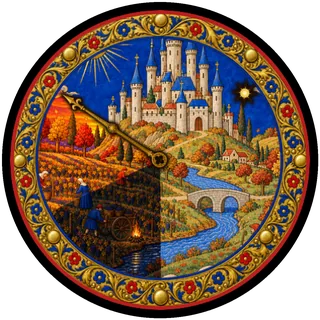
Book of Hours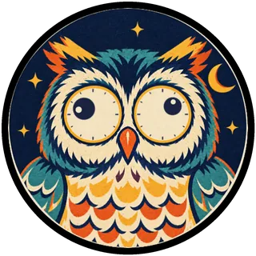
Night Owl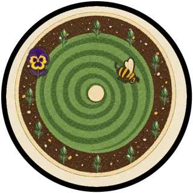
Garden Hours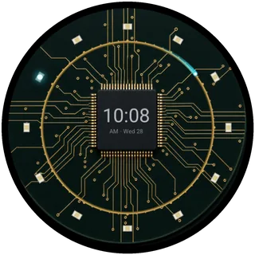
Circuit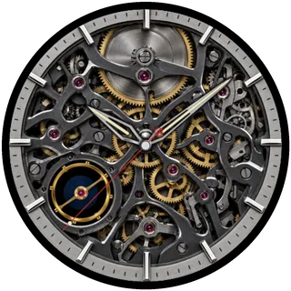
Mech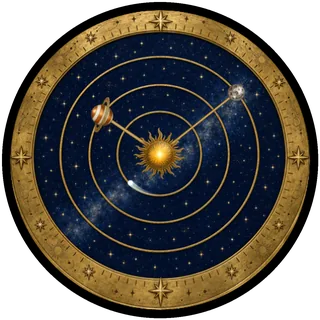
Orbit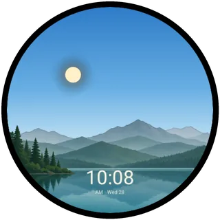
Horizon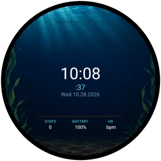
Aquarium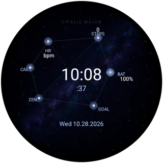
Constellation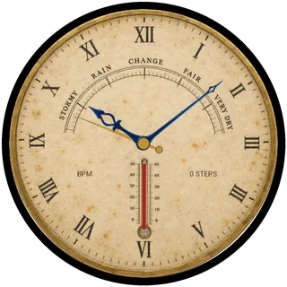
Bodyweather Barometer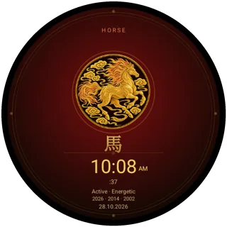
ZodiacIllustrated faces that tell a small story as the day goes by.
Circuits, movements, maps and machines, with the time inside.
Faces that respond to your steps and heart rate.
The twelve animals of the Chinese zodiac.
Android
In development. More here soon.
Contact
Questions, support or feedback: support@a5k.tech